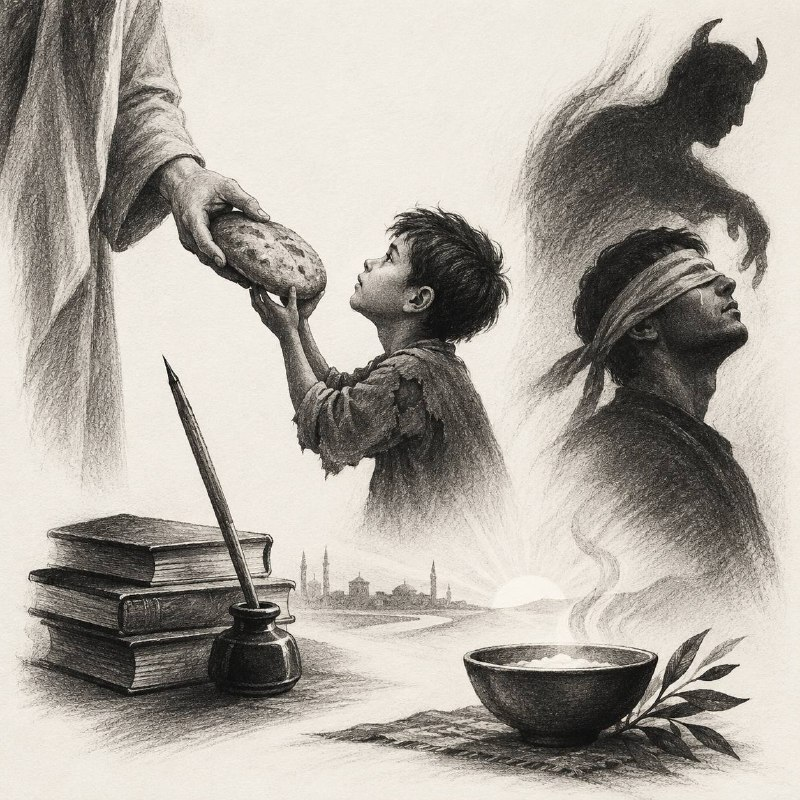

Xudoyim, odamiy farzandini hech

Xudoyim, odamiy farzandini hech
Nokas-u, noshud-u, nonkoʻr aylama.
Shaytonga ilashgan bechoralarni
Noqis ishlar ila magʻrur aylama.
Agar nola qilsam, Xudoyim, bu hol
Isyon-u tugʻyondan emasdir mutlaq.
Shunchaki, ajzimga keltirib iqror,
Tavonsiz holimga yigʻlayman, yo Haq!
Yegan nonin kimki koʻrmasa agar,
Ya’ni nonkoʻrliksiz yasholmasa kim,
Koʻzini koʻr qilib oʻymaguningcha
Uning qoʻllaridan tutmasin oʻlim.
Birovning nonini yeb koʻrlik qilgan
Koʻr boʻlgach, koʻzlari sitilib oqsin!
Bu xarob holiga, fayodlariga
Xiyonat koʻrgan zot toʻyguncha boqsin.
Non emas qorningni toʻydirgan oziq,
Balki ilm-u irfon, mehr ham nondir.
Qay qoʻldan ne’matlar yesa qaysi qul,
Yeganin unutmay qolsa, insondir.
Koʻngil neligini anglasang agar,
Har oning pokiza bir sahar boʻlsin!
Agar nonkoʻr boʻlsang, safaring saqar,
Zafaring azobli bir zahar boʻlsin!
Soʻzini tutsa kim, ahdini tutsa,
Shubhasiz, buyuk zot, buyuk mard boʻlgay.
Nafs-u shaytoniga ergashgan har kim
Xor-u xarob boʻlgay, juvonmarg boʻlgay.
Yaxshilik qilgan zot koʻziga, ey sen,
Choʻp tiqqan qoʻllaring kesilgay minba’d.
Bunyoding barbod-u, barboding kuyib,
Kul boʻlib olamga sochilgay albat.
Gar shohning zodi boʻl, xoh behlar zodi,
Istalgan maydonda aylagil javlon,
Seni quvib yetgay mazlumning dodi,
Oʻlmassan yutmasang laxta-laxta qon.
Koʻr koʻzing ochilmas, vallohu a’lam,
Karlarga uvoldir har qanday hikmat.
Illo yaxshilarning boshidan mudom
Yogʻib turgay Haqdan magʻfirat, rahmat.
Chorasiz qullarga qoʻlini choʻzgan,
Ey siz, sodiq zotlar, yorugʻ – yoʻlingiz.
Eng sara bandalar safida, omin,
Ikki dunyo ichra sarvar boʻlingiz.
Akrom MALIK